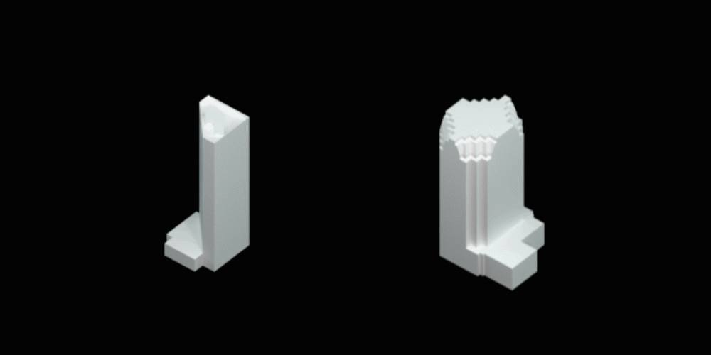
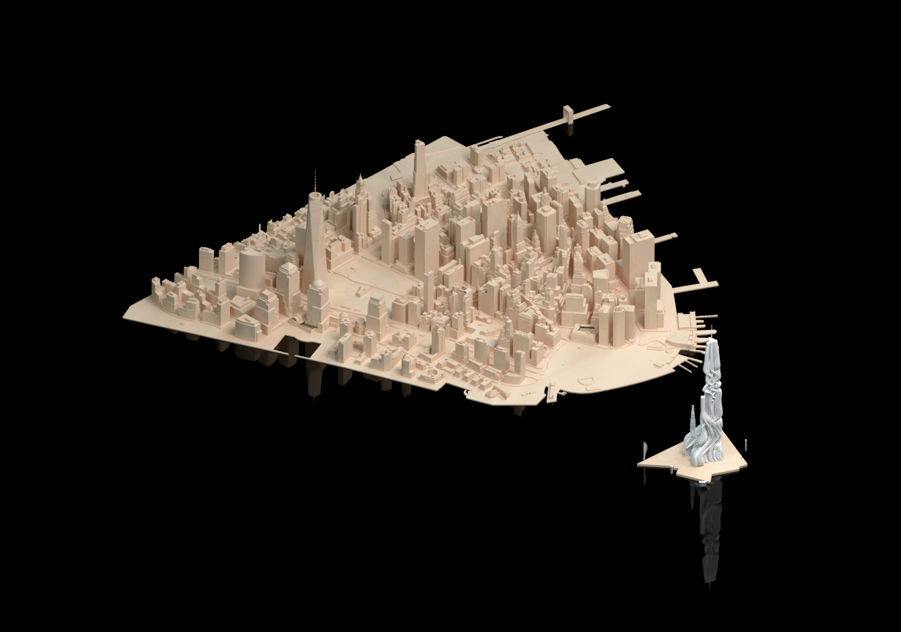

Due to the recent innovations and increased accessibility of Deep Learning (DL), there is an apparent paradigm shift in the field of architectural design to data driven design process. This emerging trend has paved the first steps toward the advent of AI-based architectural design. In this sense, we propose an experiment in exploring a canonical architectural typology known as high rise buildings. By training diverse forms of high rise buildings from major cities in the world, we will develop a new DL-integrated method of designing high rise buildings. At the end, this project will produce “Deeprise” as a system for exploring the latent space of existing high rise buildings and a new high rise building design as an example of the newly developed method.
Overall Process of Highrise Building Design method Using Generative Deep Learning Model, Jinmo Rhee, 2020
We selected 31 cities in the world and focused on specific areas that have high-rise buildings: New York City, Chicago, Atlanta, Los Angeles, Miami, Philadelphia, Pittsburgh, Boston, Seattle, San Francisco, San Diego, Houston, Dallas, Baltimore, Detroit, Indianapolis, Denver, Vancouver, Toronto, London, Paris, Riyadh, Dubai, Abu Dhabi, Hongkong, Shanghai, Taipei, Bangkok, Singapore, Honolulu, Sydney. The 3D data of the buildings were extracted from OSM (Open Street Map). Within the dataset, we’ve isolated buildings taller than 75 meters as our definition of high rise buildings. The data collection resulted in a total of 4,956 high-rise buildings formatted as 3D OBJ models. In this research, all handling of 3D data took place in Rhinoceros 3D modeling software.
Instead of using raw 3D data to train a model, we’ve developed a technique to represent each building as a set of 2D images. We did this by slicing and sampling 16 floors of each building.
Conversion of Building to Tensor by Slicing and Sampling, Jinmo Rhee, 2020
Using the DID method mentioned above, we generated 16 floor plans in the form of diagrammatic images. Each diagrammatic image has one channel and has the size of 256px, which tensor shape is: 1 x 256 x 256. Next we stacked the 16 floor plan diagrammatic images to represent a building’s feature and train a generative model that has convolutional layers. Practically each building in its 3D form was abstracted and represented as a stacked tensor and its shape is 16 x 256 x 256. The total tensor size for the entire dataset of 4596 buildings is 4596 x 16 x 256 x 256. We have named this as the Deeprise Dataset.
Highrise Dataset, Stacked Tensor, Jinmo Rhee, 2020
In terms of the model selection for the project, our main challenge was in the trade off between blurry images and trained latent space. Nowadays due to the tremendous development of Generative Adversarial Networks (GAN), GAN can generate clean synthesized images but have less freedom to explore the latent space of the model; when new data is input, the latent vector cannot be preserved and the model must be recalculated to fit the new data. On the other hand, Variational Auto Encoder (VAE) usually generates blurry images but allows for more freedom to explore the latent space; since the latent space is fit to the entire given dataset, exploring the latent space does not require new fitting calculation. Due to these trade offs, we strove for VAE that can generate GAN quality images, and consequently selected IntroVAE (Huaibo Huang et al., “IntroVAE: Introspective Variational Autoencoders for Photographic Image Synthesis,” ArXiv:1807.06358 [Cs, Stat], October 27, 2018, http://arxiv.org/abs/1807.06358.) as the hybrid solution. This method is similar to typical VAE. The main difference compared with typical VAE is that total loss includes the loss between fake and predicted images. The architecture of the IntroVAE model is illustrated below:
Model of IntroVAE, Jinmo Rhee, 2020
On the onset of the training process, we tested a dataset that included actual height of buildings represented by background colors. This dataset has 3 channels (i.e. RGB) instead of 1. After training the model based on this dataset for 1300 epochs, we confirmed this dataset is not suitable for predicting reduced vectors. Based on the prediction results, color was difficult to learn (i.e. too random and noisy) because floor plan shape and height value did not have a strong relationship.

Inference of Sampled Floor Boundary by Train Epoch, Jinmo Rhee, 2020
The hidden dimension of the latent space was 10. In order to visualize the space, we projected the vector space with 10 dimensions to 2D vector space by using t-SNE algorithm. Because the distribution of the data in the projected space was poorly scattered, we have concluded that more training is necessary for better scattering of data in the latent space. Then, developed an application that can convert the inference results from the trained model into 3D shapes for interweaving this form synthesis with design process.

Interface of DEEPRISE, Jinmo Rhee, 2020
DEEPRISE application proposes 3 ways to apply this project in an actual design process of a high-rise building: Interpolation, Synthesis, and Random Exploration. We tested interpolation between 2 buildings via the Slerp (Spherical Linear Interpolation) method. As illustrated below, we are seeing promising results.

Interpolation Examples from DEEPRISE, Jinmo Rhee, 2020
Design Application by nterpolation from DEEPRISE, Jinmo Rhee, 2020
The second way to generate a highrise building form is synthesis. After selecting synthesis tab from drop down menu in initialization, users can see a high-rise form by changing parameter sliders. This function allows users to precisely control the shape of a highrise building. Finally, for designers inspiration, they can randomly generate a shape of deeprise. Deeprise provides not only the generation functions, but also the analysis function. If users select a building point from the cloud, status screen will show the form of the selected building. And they can have two different display mode:by clusters or cities. Same clusters means similar form of buildings.

DEEPRISE Design Examples, Jinmo Rhee, 2020